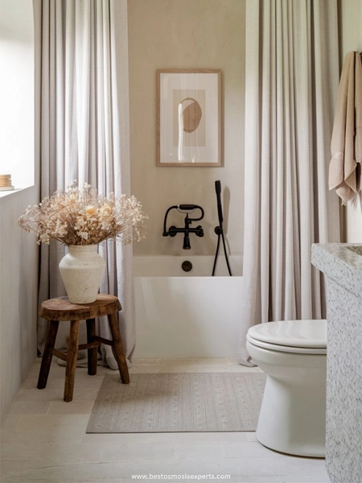

Washroom curtains in Bangladesh
Washroom curtains in Bangladesh | Curtain Canvas
A washroom is a small room with big demands. It is warm, humid, and splashed with water every day, and it still needs privacy, a clean look, and a comfortable feel. The right curtain solves several of those problems at once: it screens a window from neighboring buildings, keeps shower water off the floor, and gives the room a tidy, put-together appearance.
At Curtain Canvas, we design and make washroom curtains in Bangladesh around your actual space: its window, shower or bath area, ventilation, wall tiles, and the way your household uses the room. From consultation and precise measurement to custom tailoring and professional installation, one team looks after every step.
Book a Free ConsultationWhat washroom curtains need to do
Good washroom curtains balance practicality and appearance rather than choosing one over the other. A washroom places very different demands on fabric than any other room in the house:
- Cope with moisture. Steam, splashes, and Bangladesh's humid climate mean the fabric has to be chosen for damp conditions.
- Provide privacy. Washroom windows often face a shaft, lane, or neighboring flat, so a screen matters.
- Let air move. Good ventilation helps prevent a stale, damp feel, so the curtain should not block airflow where it is not needed.
- Keep water contained. A shower curtain needs to hang well and stay in place so water stays in the shower area.
- Be easy to keep clean. Washroom fabrics should handle regular washing and wiping.
- Suit a small space. Color, length, and pattern need to feel proportionate in a compact room.
Washroom curtain styles we offer
Our washroom curtain styles offer reliable privacy and easy upkeep in moisture-resistant designs that keep your bathroom looking fresh and stylish.

Moisture-Resistant Fabric Curtains
Best for humid washrooms. Fabrics chosen for damp environments help the curtain keep its shape and appearance with regular use.
Light-Filtering and Sheer Curtains
Best for washrooms with a window that you want to keep bright. They soften direct light and add privacy without making a small room feel dark.Explore curtain styles
Choosing fabric for a washroom in Bangladesh
Bangladesh's humidity, heat, and monsoon season should guide your choice. Use this as a starting point:
| Your priority | What to look for |
|---|---|
| Water containment (shower area) | A suitable water-resistant fabric for the curtain's purpose, hung and sized to the shower area |
| Daily humidity | Fabrics chosen for damp rooms, with finishes that cope with moisture |
| Easy upkeep | Fabrics that can be wiped or washed regularly and dry quickly |
| Privacy with some daylight | Light-filtering fabric with a tight, even weave |
| Full privacy at night | Heavier or lined fabric on the window |
| Airflow | Placement and length that do not block vents or exhaust fans |
Matching curtains to your washroom
Choose a curtain color already present in your tiles, towels, or fittings so the room looks planned rather than assembled.
Compact apartment washroom:
Light, simple curtains in a soft neutral tone to keep the room feeling open.
Guest washroom:
A neat, well-finished curtain that matches your living room palette for a welcoming impression.
Master bathroom:
Layered or fuller curtains in a calm tone for a spa-like feel.
Tiled washroom with strong colors:
A plain curtain that sits quietly beside the tile pattern.
Washroom with a bathtub or wet area:
A shower curtain that suits the layout, paired with a coordinated window treatment.
Precise details about curtains
A good fabric can still disappoint if the details are off. We plan each of these with you:
- Curtain length: Slightly clear of the floor keeps the hem out of standing water and makes upkeep easier.
- Width and fullness: Enough fabric for a neat fold, and enough width for the shower curtain to cover the wet area properly.
- Hardware: Rods, rings, and tracks suited to a damp room and matched to the fabric weight so the curtain moves smoothly.
- Fixing points: Placement that suits your wall and tile type, so fittings are secure.
- Window position: We plan the curtain so it clears taps, shelves, mirrors, and fixtures.
- Ventilation: We position and size curtains so exhaust fans and vents keep working freely.
- Safety: We advise on firm fixing and sensible placement so rods, rings, and fittings are secure in a wet room.
How we make your washroom curtains
At Curtain Canvas, each washroom curtain is made to your exact measurements, using moisture-resistant fabrics, careful tailoring, and professional installation.
Consultation:
Share your washroom, your needs, and your style. See our curtain consultancy service.
Onsite visit and fabric presentation:
We bring catalogues and swatches and can arrange a trial hanging so you can see the fabric in your own washroom's light.
Precise measurement:
Every window and shower area is measured for the right dimensions.
Custom tailoring:
Your curtains are stitched and finished to the approved design.
Professional installation:
We fit the rod or track and check alignment, movement, and curtain fall beforehand.
After-sales support:
Help with fitting and adjustments after installation.
Choose Curtain Canvas for washroom curtains
Curtain Canvas offers moisture-resistant fabrics, precise custom tailoring, and professional installation, so your washroom curtains stay fresh, private, and stylish for years.
Make an Appointment- Interior design-focused approach: We choose curtains that suit your fittings, tiles, colors, and room proportions.
- Wide choice: 120+ fabric and style options.
- Made to measure: Every curtain is planned for your window or shower area, not adapted from a standard size.
- One team, start to finish: consultation, measurement, tailoring, installation, and support.
- Experience you can check: 5+ years of curtain expertise, 2,000+ windows styled, and a 4.9/5 client satisfaction rating. See our client reviews and completed projects.
Washroom Curtains Across Bangladesh
We serve homes and apartments across Dhaka and other major cities. Explore our Dhaka service area and the wider Bangladesh service area.
FAQs about washroom curtains
It depends on what the curtain is for. For a shower area, choose a suitable water-resistant curtain sized to cover the wet area. For a washroom window, choose a light-filtering or moisture-suitable fabric that gives privacy without blocking too much light or airflow.
Our consultants can advise on shower curtain solutions for your washroom layout. Please contact us with your shower or bath dimensions, and we will confirm the options available.
Regular curtains are not designed for constant steam and splashes. In Bangladesh's humid climate, we recommend fabrics chosen for damp rooms, and we advise on placement so the curtain stays away from direct water where possible.
Good ventilation, suitable fabric, and regular cleaning all help. We advise on curtain length, placement, and fabric so the curtain can dry between uses, and you should wash it regularly following the fabric's care instructions.
Light, calm shades such as white, ivory, soft grey, and pale green keep a small room feeling clean and open. A single accent color taken from your tiles or towels can add personality. We help you match the curtain to your fittings and walls.
Yes. All our washroom curtains are made to measure, based on your actual window and shower dimensions, fabric choice, and design.
Yes. Our team measures, installs the rod or track, and checks the finish before handover.